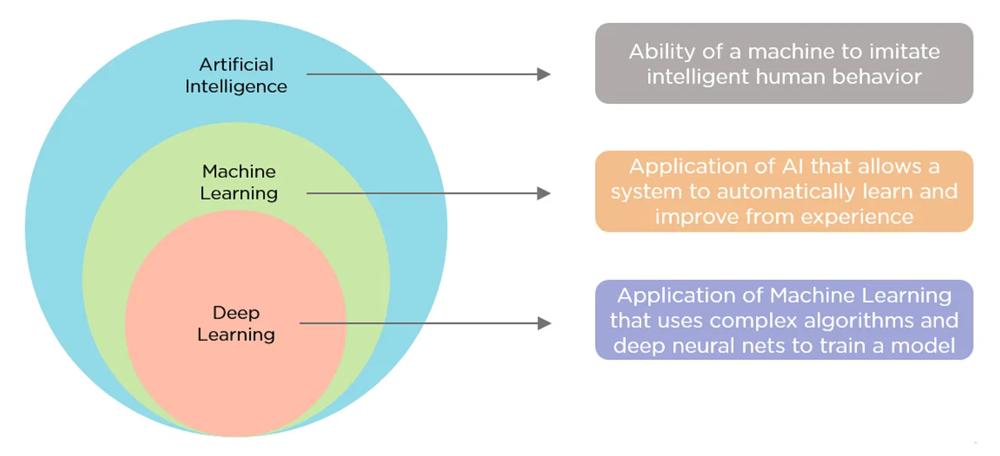
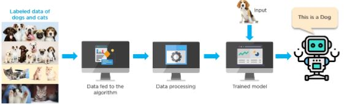
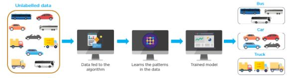
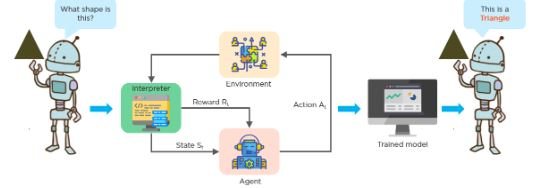
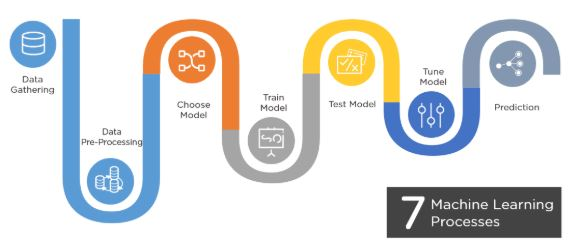
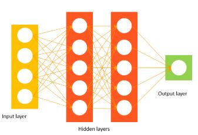
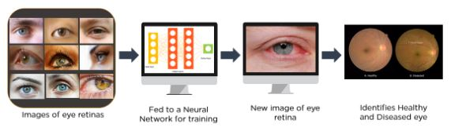
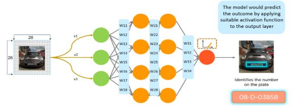

Terminologies
Data Science / Data Analytics / Artificial Intelligence / Machine Learning / Deep Learning
What is Data Science?
Data science is a concept used to tackle big data and includes data cleansing, preparation, and analysis. A data scientist gathers data from multiple sources and applies machine learning, predictive analytics, and sentiment analysis to extract critical information from the collected data sets. They understand data from a business point of view and can provide accurate predictions and insights that can be used to power critical business decisions.
Skills of Data Scientist
- Strong knowledge of Python, SAS, R, Scala
- Hands-on experience in SQL database coding
- Ability to work with unstructured data from various sources like video and social media
- Understand multiple analytical functions
- Knowledge of machine learning
What is a Data Analytics?
A data analyst is usually the person who can do basic descriptive statistics, visualize data, and communicate data points for conclusions. They must have a basic understanding of statistics, a perfect sense of databases, the ability to create new views, and the perception to visualize the data. Data analytics can be referred to as the necessary level of data science.
Skills of Data Analyst
- Knowledge of mathematical statistics
- Fluent understanding of R and Python
- Data wrangling
- Understand HIVE
Data Science vs. Data Analytics
Data science is an umbrella term that encompasses data analytics, data mining, machine learning, and several other related disciplines. While a data scientist is expected to forecast the future based on past patterns, data analysts extract meaningful insights from various data sources. A data scientist creates questions, while a data analyst finds answers to the existing set of questions.
What is Machine Learning?
Machine learning can be defined as the practice of using algorithms to extract data, learn from it, and then forecast future trends for that topic. Traditional machine learning software is statistical analysis and predictive analysis that is used to spot patterns and catch hidden insights based on perceived data.
A good example of machine learning implementation is Facebook. Facebook’s machine learning algorithms gather behavioral information for every user on the social platform. Based on one’s past behavior, the algorithm predicts interests and recommends articles and notifications on the news feed. Similarly, when Amazon recommends products, or when Netflix recommends movies based on past behaviors, machine learning is at work.
Skills for Machine Learning Engineer
- Expertise in computer fundamentals
- In-depth knowledge of programming skills
- Knowledge of probability and statistics
- Data modeling and evaluation skills
Data Science vs. Machine Learning
Because data science is a broad term for multiple disciplines, machine learning fits within data science. Machine learning uses various techniques, such as regression and supervised clustering. On the other hand, the data’ in data science may or may not evolve from a machine or a mechanical process. The main difference between the two is that data science as a broader term not only focuses on algorithms and statistics but also takes care of the entire data processing methodology.
Artificial Intelligence

- Artificial Intelligence is the concept of creating smart intelligent machines.
- Machine Learning is a subset of artificial intelligence that helps you build AI-driven applications.
- Deep Learning is a subset of machine learning that uses vast volumes of data and complex algorithms to train a model.
Artificial intelligence, commonly referred to as AI, is the process of imparting data, information, and human intelligence to machines. The main goal of Artificial Intelligence is to develop self-reliant machines that can think and act like humans. These machines can mimic human behavior and perform tasks by learning and problem-solving. Most of the AI systems simulate natural intelligence to solve complex problems.
Types of Artificial Intelligence
- Reactive Machines - These are systems that only react. These systems don’t form memories, and they don’t use any past experiences for making new decisions.
- Limited Memory - These systems reference the past, and information is added over a period of time. The referenced information is short-lived.
- Theory of Mind - This covers systems that are able to understand human emotions and how they affect decision making. They are trained to adjust their behavior accordingly.
- Self-awareness - These systems are designed and created to be aware of themselves. They understand their own internal states, predict other people’s feelings, and act appropriately.
Applications of Artificial Intelligence
- Machine Translation such as Google Translate
- Self Driving Vehicles such as Google’s Waymo
- AI Robots such as Sophia and Aibo
- Speech Recognition applications like Apple’s Siri or OK Google
Machine Learning?
Machine learning is a discipline of computer science that uses computer algorithms and analytics to build predictive models that can solve business problems.
- Machine Learning is making the computer learn from studying data and statistics.
- Machine Learning is a step into the direction of artificial intelligence (AI).
- Machine Learning is a program that analyses data and learns to predict the outcome.
How Does Machine Learning Work?
Machine learning accesses vast amounts of data (both structured and unstructured) and learns from it to predict the future. It learns from the data by using multiple algorithms and techniques. Below is a diagram that shows how a machine learns from data.
Types of Machine Learning
Machine learning algorithms are classified into three main categories:
Supervised Learning
In supervised learning, the data is already labeled, which means you know the target variable. Using this method of learning, systems can predict future outcomes based on past data. It requires that at least an input and output variable be given to the model for it to be trained.
Below is an example of a supervised learning method. The algorithm is trained using labeled data of dogs and cats. The trained model predicts whether the new image is that of a cat or a dog.

Some examples of supervised learning include linear regression, logistic regression, support vector machines, Naive Bayes, and decision tree.
Unsupervised Learning
Unsupervised learning algorithms employ unlabeled data to discover patterns from the data on their own. The systems are able to identify hidden features from the input data provided. Once the data is more readable, the patterns and similarities become more evident.
Below is an example of an unsupervised learning method that trains a model using unlabeled data. In this case, the data consists of different vehicles. The purpose of the model is to classify each kind of vehicle.

Some examples of unsupervised learning include k-means clustering, hierarchical clustering, and anomaly detection.
Reinforcement Learning
The goal of reinforcement learning is to train an agent to complete a task within an uncertain environment. The agent receives observations and a reward from the environment and sends actions to the environment. The reward measures how successful action is with respect to completing the task goal.
Below is an example that shows how a machine is trained to identify shapes.

Examples of reinforcement learning algorithms include Q-learning and Deep Q-learning Neural Networks.
Machine Learning Processes
Machine Learning involves seven steps:

Machine Learning Applications
- Sales forecasting for different products
- Fraud analysis in banking
- Product recommendations
- Stock price prediction
Deep Learning?
Deep learning is a subset of machine learning that deals with algorithms inspired by the structure and function of the human brain. Deep learning algorithms can work with an enormous amount of both structured and unstructured data. Deep learning’s core concept lies in artificial neural networks, which enable machines to make decisions.
The major difference between deep learning vs machine learning is the way data is presented to the machine. Machine learning algorithms usually require structured data, whereas deep learning networks work on multiple layers of artificial neural networks.
This is what a simple neural network looks like:

The network has an input layer that accepts inputs from the data. The hidden layer is used to find any hidden features from the data. The output layer then provides the expected output.
Here is an example of a neural network that uses large sets of unlabeled data of eye retinas. The network model is trained on this data to find out whether or not a person has diabetic retinopathy.

Now that we have an idea of what deep learning is, let’s see how it works.
How Does Deep Learning Work?
- Calculate the weighted sums.
- The calculated sum of weights is passed as input to the activation function.
- The activation function takes the “weighted sum of input” as the input to the function, adds a bias, and decides whether the neuron should be fired or not.
- The output layer gives the predicted output.
- The model output is compared with the actual output. After training the neural network, the model uses the backpropagation method to improve the performance of the network. The cost function helps to reduce the error rate.
In the following example, deep learning and neural networks are used to identify the number on a license plate. This technique is used by many countries to identify rules violators and speeding vehicles.

Types of Deep Neural Networks
Convolutional Neural Network (CNN) - CNN is a class of deep neural networks most commonly used for image analysis.
Recurrent Neural Network (RNN) - RNN uses sequential information to build a model. It often works better for models that have to memorize past data.
Generative Adversarial Network (GAN) - GAN are algorithmic architectures that use two neural networks to create new, synthetic instances of data that pass for real data. A GAN trained on photographs can generate new photographs that look at least superficially authentic to human observers.
Deep Belief Network (DBN) - DBN is a generative graphical model that is composed of multiple layers of latent variables called hidden units. Each layer is interconnected, but the units are not.
Deep Learning Applications
- Cancer tumor detection
- Captionbot for captioning an image
- Music generation
- Image coloring
- Object detection
https://www.simplilearn.com/data-science-vs-data-analytics-vs-machine-learning-article https://www.simplilearn.com/tutorials/artificial-intelligence-tutorial/ai-vs-machine-learning-vs-deep-learning